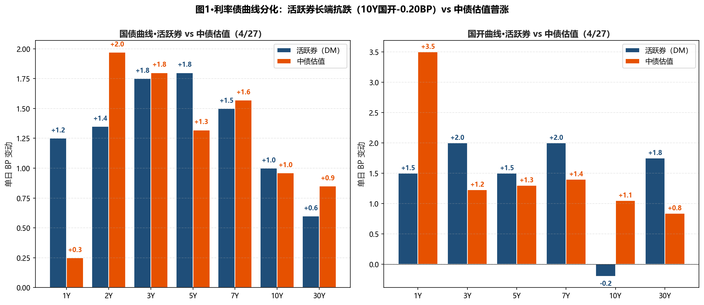
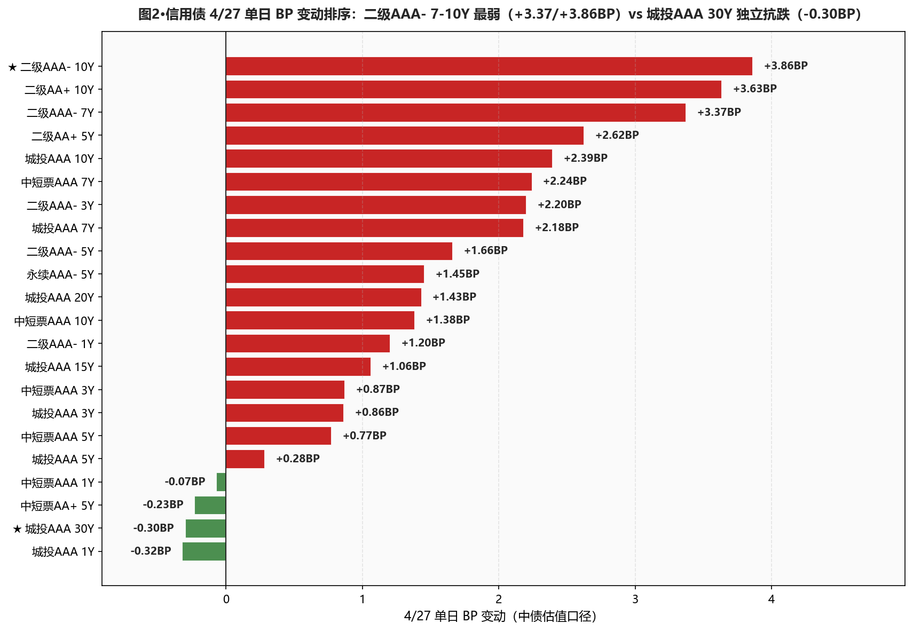
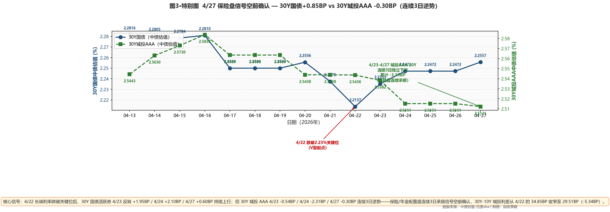

市场定性 长端二次承压 + 板块轮动至二级 + 配置盘信号空前确认 + 资金面收敛——周末特别国债新券上市预期+MLF续做终结13月净增双重压力下，长端利率债中债估值普涨（30Y +0.85BP至2.2557%、20Y +2.50BP至2.2103%、10Y +0.96BP）；二级资本债 AAA- 10Y +3.86BP / 7Y +3.37BP 单日大幅承压、是今日最弱板块；但城投 AAA 30Y -0.30BP 连续第3个交易日逆势下行、累计 -3.15BP（4/23-4/27）——保险/年金配置盘连续承接信号空前确认；30Y-10Y 城投利差从 32.20BP 收窄到 29.51BP（距 25BP 目标位仅 4.51BP、接近触发周报新增翻转信号⑤）；DR007 +3.54BP 至 1.3611%、低 OMO 仅 3.89BP（4/24 是 7.43BP）、收窄一半。
- ⚠️ 长端利率债 维持止盈10Y 国债活跃券 1.7650%（距 1.75% 上方 1.50BP）/中债估值 1.7697%（上方 1.97BP）；30Y 活跃券 2.2570%（距 2.23% 上方 2.70BP）/中债估值 2.2557%（上方 2.57BP）——距周报建仓位（30Y 2.32-2.35%）还差 6-9BP；继续观望、不追跌；本周关注 30Y 特别国债新券发行节奏
- ✅ 城投AAA 30Y 维持15-20%底仓连续3日独立抗跌、保险盘承接信号空前确认；30Y-10Y 城投利差距 25BP 目标位仅 4.51BP；不追加（待利差压到 25BP 一次性建满）、避免追买
- ✅ 5Y 二级AAA- 小幅试探加仓今日 +1.66BP 已触发周报"5Y二永单日 +1.5BP+ 调整即加仓"信号；分位 33.4% 已具备初步赔率；本日小幅试探性加仓 5Y 二级AAA-（仓位提升 2-3pct）；但 7-10Y 单日 +3.37/+3.86BP 调整尚未到位（卖方观点也是"一波压缩还没结束"），暂不动
- ⚠️ 杠杆下调至 105-110%DR007 vs OMO 从 7.43BP 急速收窄到 3.89BP；MLF 续做终结13月净增（4月净回笼2000亿）；R-DR007 进一步压缩到 2.15BP（分层消失）；从 110-115% 下调至 105-110%，应对资金面边际收敛
- ❌ 短端依然不动中短票 AAA 1Y -0.07BP / 城投 AAA 1Y -0.32BP / AA+ 1Y -0.07BP——短端继续下行、贴底面进一步扩大；周报里"修正短端规避逻辑"的判断验证：5月再决定方向、当前不主动加仓也不调出（视 5/15 政府债供给高峰+税期）
- ① 30Y国债 vs 2.23% ○ 维持上方：活跃券 2.2570%（上方 2.70BP）、中债估值 2.2557%（上方 2.57BP）→连续 3 日维持上方、阻力位完全确认，长端利率债维持止盈不追涨
- ② 10Y国债 vs 1.75% ○ 维持上方：活跃券 1.7650%（上方 1.50BP）、中债估值 1.7697%（上方 1.97BP）→阻力位反复确认，10Y 利率债减仓至底仓下限
- ③ R-DR007 利差 >15BP ○ 未触发：当前 2.15BP（较昨日 -2.30BP）、距阈值 12.85BP→分层进一步压缩、加杠杆窗口仍开放但需关注 5 月资金价格回升
- ④ 10Y中短票AAA-3Y 利差 ≤25BP ○ 未触发：当前 46.03BP（较昨日 +0.51BP）、距阈值 21.03BP→中长-中端价差仍宽，暂不切换
- ⑤ 30Y-10Y 城投AAA 利差 ≤25BP（周报新增） ⚠️ 接近触发：当前 29.51BP（较昨日 -2.69BP）、距阈值仅 4.51BP→城投 30Y 独立抗跌动能持续，触发后立即一次性建满 15-20% 长端城投底仓
A 段·详细数据
① 资金面 Wind EDB 实测
央行今日 7 天逆回购投放 2185 亿元（5 亿到期、净投放 2180 亿元），全额满足一级交易商需求；但 MLF 4 月净回笼 2000 亿、终结连续 13 个月净增——这是 2025 年 2 月以来首次。Wind EDB 实测：DR001 1.2386%（+1.98BP）、DR007 1.3611%（+3.54BP）、R001 1.3124%（+2.13BP）、R007 1.3826%（+1.24BP）；DR007 低于 OMO 仅 3.89BP，从 4/24 的 7.43BP 急速收窄 3.54BP——月末扰动+MLF 缩量双重影响；R-DR007 进一步压缩到 2.15BP（-2.30BP，分层消失）；R-DR001 走阔到 7.38BP；NCD 1Y 1.4600%（+1.50BP，历史新低后回升）、NCD 3M 1.3725%（+1.75BP）。
| 指标 | 4/24 (%) | 4/27 (%) | 变动 |
|---|---|---|---|
| DR001 | 1.2188 | 1.2386 | +1.98BP |
| DR007 | 1.3257 | 1.3611 | +3.54BP |
| R001 | 1.2911 | 1.3124 | +2.13BP |
| R007 | 1.3702 | 1.3826 | +1.24BP |
| NCD 1Y | 1.4450 | 1.4600 | +1.50BP |
| NCD 3M | 1.3550 | 1.3725 | +1.75BP |
| DR007 低于 OMO | 7.43BP | 3.89BP | -3.54BP |
| R-DR007 利差 | 4.45BP | 2.15BP | -2.30BP |
② 利率债 — 中债估值 中债估值 xlsx
长端中债估值二次承压：国债 30Y +0.85BP 报 2.2557%、20Y +2.50BP 报 2.2103%、10Y +0.96BP、7Y +1.57BP；20Y 调整幅度大于 30Y，因 30Y 特别国债新券即将上市、市场已开始对老券再定价（20Y 老券承压）；国开短端突变 1Y +3.50BP（此前一直贴底）、与货币市场短端利率收敛同步；国债 30Y-10Y 期限利差从 48.71BP 微幅收窄到 48.60BP（-0.11BP）。
| 品种 | 4/24 (%) | 4/27 (%) | BP |
|---|---|---|---|
| 国债 1Y | 1.1438 | 1.1463 | +0.25BP |
| 国债 2Y | 1.2393 | 1.2590 | +1.97BP |
| 国债 3Y | 1.2779 | 1.2959 | +1.80BP |
| 国债 5Y | 1.4799 | 1.4931 | +1.32BP |
| 国债 7Y | 1.6311 | 1.6468 | +1.57BP |
| 国债 10Y | 1.7601 | 1.7697 | +0.96BP |
| 国债 15Y | 2.0430 | 2.0603 | +1.73BP |
| 国债 20Y | 2.1853 | 2.2103 | +2.50BP |
| 国债 30Y | 2.2472 | 2.2557 | +0.85BP |
| 国开 1Y | 1.3691 | 1.4041 | +3.50BP |
| 国开 3Y | 1.5458 | 1.5581 | +1.23BP |
| 国开 5Y | 1.6459 | 1.6589 | +1.30BP |
| 国开 7Y | 1.7945 | 1.8085 | +1.40BP |
| 国开 10Y | 1.8639 | 1.8744 | +1.05BP |
| 国开 30Y | 2.3783 | 2.3867 | +0.84BP |
③ 利率债 — 活跃券 DM查债通
活跃券端：30Y 国债"26附息国债02" +0.60BP 报 2.2570%（距 2.23% 上方 2.70BP）、10Y 国债"26附息国债05" +1.00BP 报 1.7650%（距 1.75% 上方 1.50BP）、10Y 国开"25国开20" -0.20BP 报 1.8780%——10Y 国开活跃券独立抗跌、是今日唯一收益率下行的利率债活跃券，与中债估值 +1.05BP 形成口径背离（隐含税率从 10.38BP 微幅走阔到 10.47BP）；30Y 国债活跃券调整幅度（+0.60BP）显著小于中债估值（+0.85BP），交易盘对长端的承接意愿高于配置盘。国债期货全线下跌（30Y 主连 -0.52% 报 112.800、10Y -0.22% 报 108.500、5Y -0.14%、2Y -0.05%）。
| 品种 | 4/27 收盘 (%) | BP |
|---|---|---|
| 国债 1Y | 1.1375 | +1.25BP |
| 国债 3Y | 1.2875 | +1.75BP |
| 国债 5Y | 1.4955 | +1.80BP |
| 国债 7Y | 1.6400 | +1.50BP |
| 国债 10Y | 1.7650 | +1.00BP |
| 国债 30Y | 2.2570 | +0.60BP |
| 国开 5Y | 1.6400 | +1.50BP |
| 国开 7Y | 1.7650 | +2.00BP |
| 国开 10Y | 1.8780 | -0.20BP |
| 国开 30Y | 2.1250 | +1.75BP |
④ 信用债 — 中债估值（24 个核心品种） 中债估值 xlsx
呈现"二级资本债 AAA- 7-10Y 集中承压 + 城投 AAA 30Y 独立抗跌 + 短端继续下行"三段分化： 银行二级资本债是今日最弱板块——AAA- 10Y +3.86BP / 7Y +3.37BP / 5Y +1.66BP；AA+ 10Y +3.63BP / 5Y +2.62BP——5Y 永续 AAA- +1.45BP 调整幅度小于二级； 城投 AAA 30Y -0.30BP 连续3日逆势下行、累计 -3.15BP（4/23-4/27）；20Y +1.43BP / 15Y +1.06BP 调整幅度小于 10Y +2.39BP / 7Y +2.18BP；城投 AAA 1Y -0.32BP / AA+ 5Y ++0.28BP 短端继续下行； 中短票 AAA 7Y +2.24BP / 10Y +1.38BP 调整幅度显著小于二级同期限；中短票 AAA 5Y +0.77BP / 1Y -0.07BP 短端坚挺。
| 品种 | 4/24 (%) | 4/27 (%) | BP |
|---|---|---|---|
| 中短票AAA 1Y | 1.5025 | 1.5018 | -0.07BP |
| 中短票AAA 3Y | 1.7111 | 1.7198 | +0.87BP |
| 中短票AAA 5Y | 1.8578 | 1.8655 | +0.77BP |
| 中短票AAA 7Y | 2.0191 | 2.0415 | +2.24BP |
| 中短票AAA 10Y | 2.1663 | 2.1801 | +1.38BP |
| 中短票AA+ 1Y | 1.5325 | 1.5318 | -0.07BP |
| 中短票AA+ 3Y | 1.7711 | 1.7798 | +0.87BP |
| 中短票AA+ 5Y | 1.9278 | 1.9255 | -0.23BP |
| 城投AAA 1Y | 1.5218 | 1.5186 | -0.32BP |
| 城投AAA 3Y | 1.7365 | 1.7451 | +0.86BP |
| 城投AAA 5Y | 1.8550 | 1.8578 | +0.28BP |
| 城投AAA 7Y | 1.9981 | 2.0199 | +2.18BP |
| 城投AAA 10Y | 2.1931 | 2.2170 | +2.39BP |
| 城投AAA 15Y | 2.3202 | 2.3308 | +1.06BP |
| 城投AAA 20Y | 2.4422 | 2.4565 | +1.43BP |
| ★ 城投AAA 30Y | 2.5151 | 2.5121 | -0.30BP |
| 二级AAA- 1Y | 1.5105 | 1.5225 | +1.20BP |
| 二级AAA- 3Y | 1.7795 | 1.8015 | +2.20BP |
| 二级AAA- 5Y | 1.9906 | 2.0072 | +1.66BP |
| 二级AAA- 7Y | 2.1412 | 2.1749 | +3.37BP |
| ★ 二级AAA- 10Y | 2.2451 | 2.2837 | +3.86BP |
| 二级AA+ 5Y | 2.0104 | 2.0366 | +2.62BP |
| 二级AA+ 10Y | 2.2725 | 2.3088 | +3.63BP |
| 永续AAA- 5Y | 2.0042 | 2.0187 | +1.45BP |
B 段·今日关键事件
① 30Y 特别国债新券上市在即——长期国债老券再定价压力：交易员称"30 年期特别国债新券即将上市，同期限老券面临换券压力，对超长端表现构成拖累"。这是今日 20Y/30Y 国债中债估值上行幅度（20Y +2.50BP> 30Y +0.85BP）异常分化的主因——市场预期新券集中在 30Y 期限、老券（含 20Y 部分）将被新券替代。对本行启示：下周 30Y 特别国债招标节奏关注、若一级中标利率显著高于二级、可作为加仓 30Y 城投/二级的择时窗口。
② MLF 续做终结连续 13 月净增、4 月净回笼 2000 亿：央行今日 MLF 续做规模未达此前规模、4 月全月净回笼 2000 亿——这是 2025 年 2 月以来首次终结净增势头；但同期 7 天逆回购净投放 2180 亿、呵护态度仍在线；月末时点资金价格小幅攀升。对本行启示：卖方共识"温和引导、1.2% 是走廊下限"——本行同意，但下调杠杆 5pct（110-115%→105-110%）作为应对，5 月再视政府债供给+税期变化决定是否再调整。
③ 一级市场降温：农发行 3/10Y 中标 1.4943%/1.8509%、全场倍数 6.54/5.65、边际倍数 10.11/1.06——10Y 边际倍数仅 1.06（接近 1）、一级配置盘热度显著降温（4/24 仍是 4-5 倍）；说明配置盘对 1.85% 上方 10Y 国开的承接意愿快速消退。
C 段·重点可视化

图1·利率债曲线分化：活跃券 vs 中债估值（左：国债；右：国开。10Y 国开活跃券 -0.20BP 是唯一独立抗跌的活跃券）

图2·信用债 4/27 单日 BP 变动排序：二级AAA- 10Y +3.86BP 最弱、城投AAA 30Y -0.30BP 独立抗跌（图中★）

图3·特别图（V7.0 动态触发：跨品种分化连续3日）·保险盘信号空前确认：30Y国债 vs 30Y城投AAA 11个交易日双轴对比
本日报为 V7.1 标准（V6.0 程序化 BP + V6.1 HTML 从0生成 + V7.1-A 后置自检）；图3 V7.0 动态信号触发"跨品种分化连续3日"模板；周一工作流（V5.x）已含上周（4/20-4/26）卖方周报参考卡。